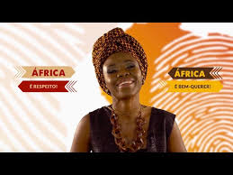
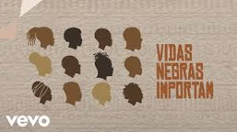

Valores da cultura africana - Mwana Afrika

Assista a música "Vidas negras importam - Martinho Da Vila
Poema sobre o Dia da Consciência Negra
A cultura afro é um conjunto de manifestações culturais, formado a partir da junção de elementos da cultura dos povos africanos. Está presente em quase todas as formas que compõem a identidade cultural, incluindo: Música e Dança: Com o tambor como base para os ritmos, muitos gêneros musicais e de dança se consolidaram no Brasil, como o Maracatu, a Cavalhada, a Congada, a Capoeira e o Samba. Culinária: A culinária afro é rica em sabores e influenciou pratos tradicionais brasileiros, como o acarajé, o vatapá e o feijão tropeiro. Religião: A religiosidade afro-brasileira é marcada pelo Candomblé, a Umbanda e outras práticas espirituais que combinam elementos africanos com crenças indígenas e católicas.
Valores da cultura africana - Mwana Afrika
Assista a música "Vidas negras importam - Martinho Da Vila
Poema sobre o Dia da Consciência Negra